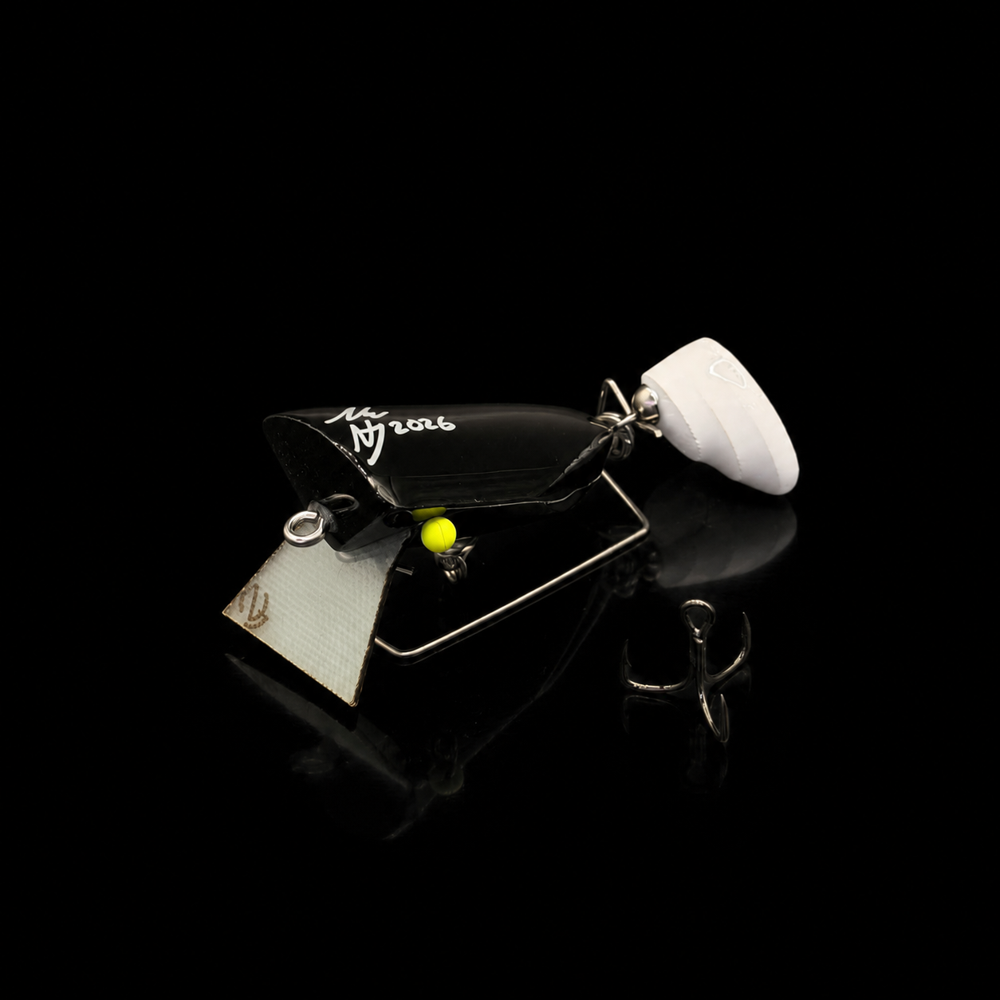

Bass Wakebait
$55.00For bass feeding high but spooked by noise. A subtle wake that pulls fish from distance — now with the Thumper Tail adding pulse without the racket.
- Length55mm
- Weight10g
- ConstructionHandcrafted timber body
- BibFibre composite
- TailNutterJuck Thumper Tail
The Bass Wakebait is one of the original NutterJuck designs and has been in the range since the beginning. Developed alongside the OG Bass Walker, it has been refined continuously over the years as new ideas, techniques and on-water experience shaped its evolution.
Handcrafted from timber and fitted with a durable fibre composite bib, it produces a subtle surface wake and rolling action that pulls fish from surprising distances. Creating disturbance without excessive noise is exactly what you want when bass are feeding high in the water column but are wary of more aggressive presentations.
The 2026 version takes it to another level. Rigged with the new NutterJuck Thumper Tail, the lure generates additional vibration, movement and surface commotion — an irresistible target for predatory fish. Traditional wakebait action, plus the pulse of the Thumper Tail, makes a presentation that demands attention.
Worked slowly across calm water at dawn, or twitched through shaded structure through the day, the Bass Wakebait is built to draw explosive strikes from Australian Bass. Years of development and proven performance behind it — quite simply the best Wakebait NutterJuck has ever produced.